NYC EDITORIALPHOTOGRAPHER
Direct, expressive images for fashion, events,
weddings, brands, and people with something to say.
NYC | --/--/-- | --:--:--
PORTRAITSEVENTSWEDDINGS
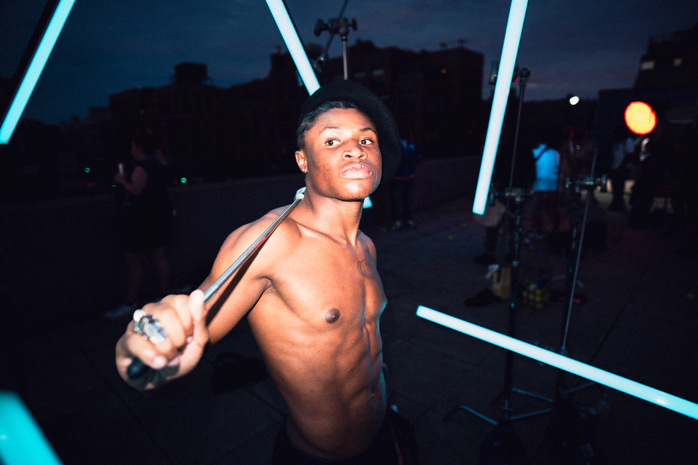
THE BALD DUDE CO. / NEW YORK CITY
NYC Editorial
Photographer
The Bald Dude Co. is Justin von Braun’s New York City photography studio. I make direct, expressive images for people, events, weddings, and brands.
New York City
Available worldwide
PHOTOGRAPHY FOR
PEOPLE, EVENTS,
AND BRANDS.
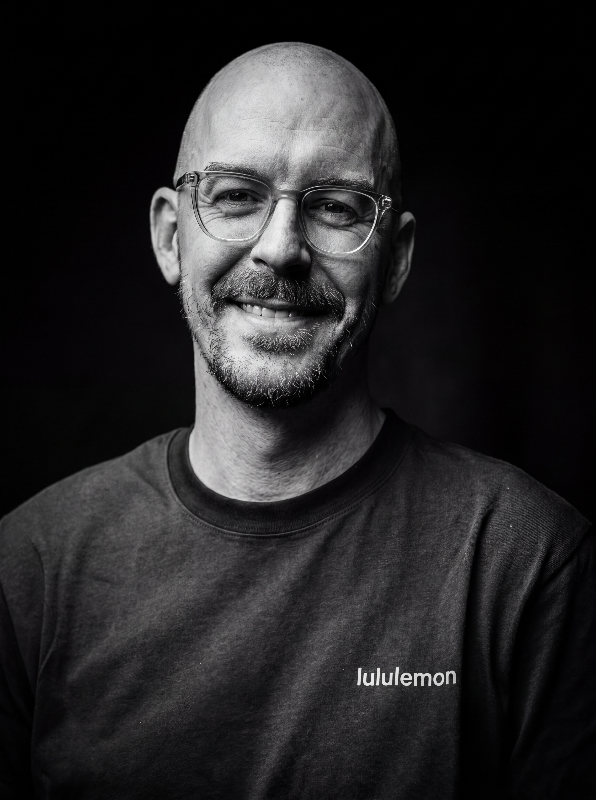
I’m Justin von Braun, a New York City photographer. I photograph fashion, events, portraits, courthouse weddings, and commercial work with direct flash and clear direction.
AVAILABLE IN NEW YORK CITY AND WORLDWIDE.
EXPLORE PHOTOGRAPHY SERVICESThe Bald Dude Co. is Justin von Braun’s New York City photography studio. I make direct, expressive images for people, events, weddings, and brands.
New York City
Available worldwide.
Let’s create great
results together
NYC Photography.
Selected archive / 2026
001—005
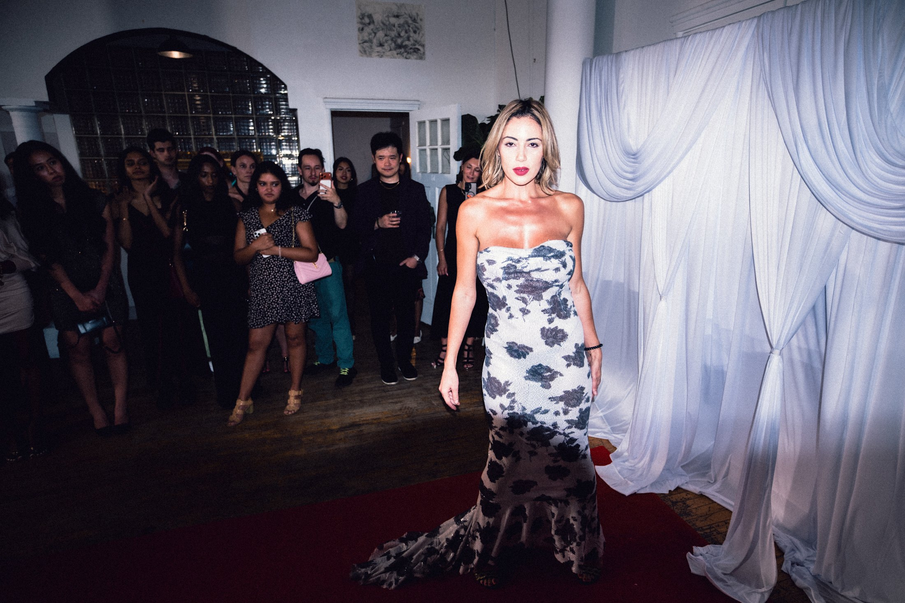
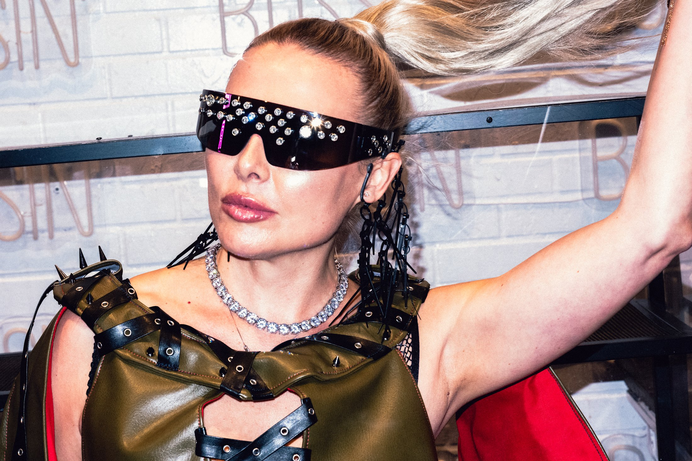
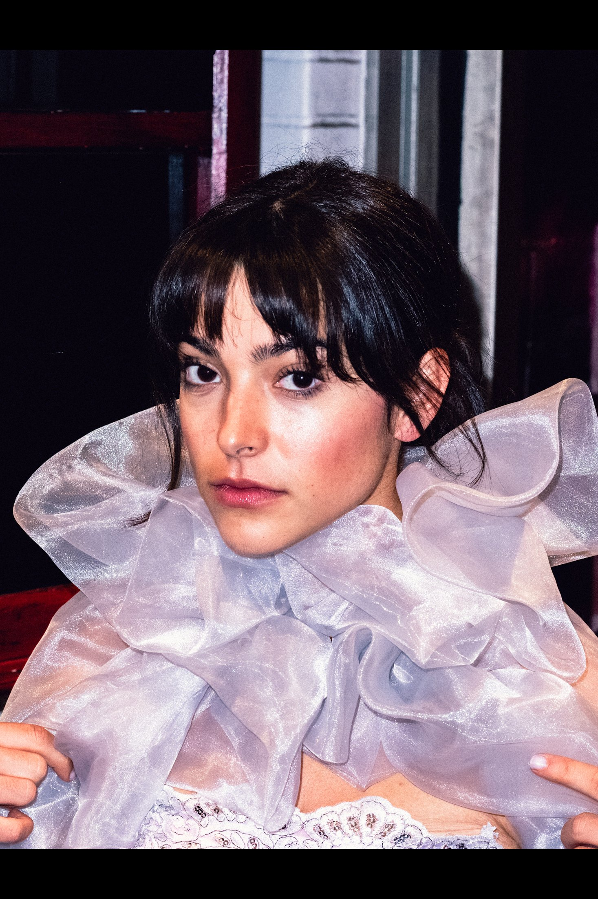
first.
Polished enough for the campaign. Alive enough to remember.
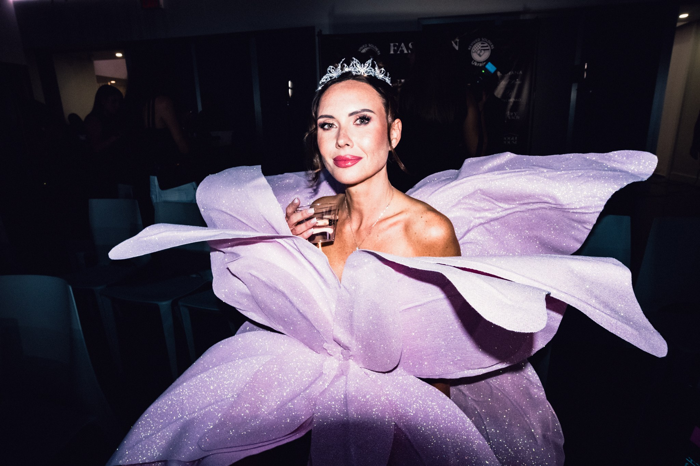
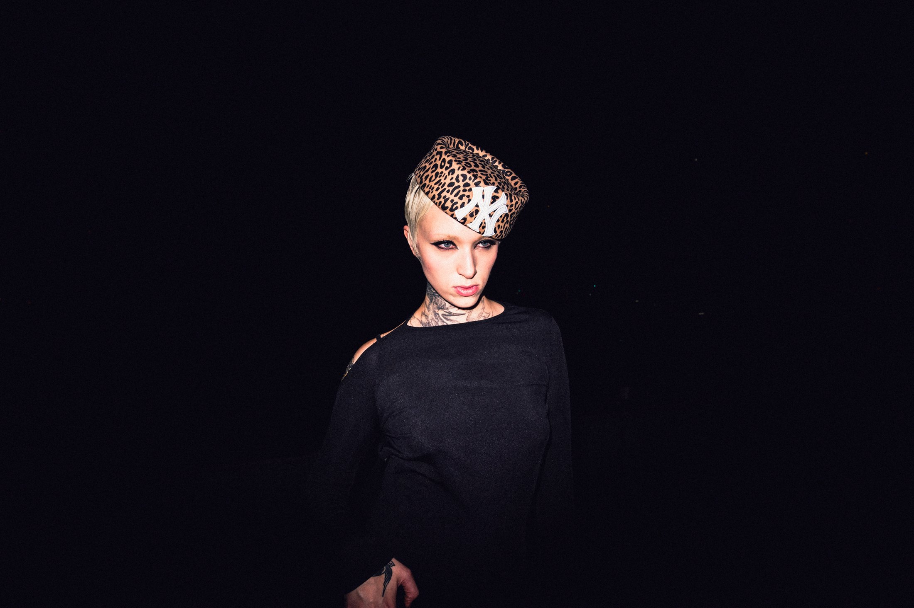
The flash
keeps moving.
Three different cuts. Three different rooms. No repeated frames.
Hire me for
Editorial + FashionCampaigns / lookbooks / backstage / artist portraits
Events + BackstageLaunches / festivals / fashion events / nightlife
PortraitsEditorial / artists / founders / people with presence
Courthouse WeddingsCity ceremonies / direct flash / documentary instinct
CommercialProducts / brands / social campaigns / launch content
Justin von Braun,
NYC photographer.
I’m Justin von Braun, the photographer behind The Bald Dude Co. I photograph fashion, events, portraits, courthouse weddings, and commercial work, plus short-form motion when the project calls for it.
I work with people and brands who want strong images without being over-directed. I’ll help you feel comfortable, find the light, and stay ready for the moments that happen on their own.
That’s the goal: photographs that feel honest, look good, and still feel like you.
Get in front
of my camera.
Start a projectYour story is already happening.
Let’s photograph it well.
NEW YORK CITY PHOTOGRAPHY SERVICES
Photography for people, events, and brands.
I’m Justin von Braun, a New York City photographer. I photograph fashion, events, portraits, courthouse weddings, and commercial work with direct flash and clear direction.
Available in New York City and worldwide.
NYC
photography.
Selected archive / 2026
Flash
first.Polished enough for the campaign. Alive enough to remember.
SELECTED PROJECT STORIES
See the
work in context.
COURTHOUSE WEDDINGS / NEW YORK
Vows
in print.
I photograph the ceremony, the portraits afterward, and everything that happens in between. I keep things moving, give you direction when you want it, and leave room for the candid stuff.
MAKE THE DAY MAGAZINE-WORTHY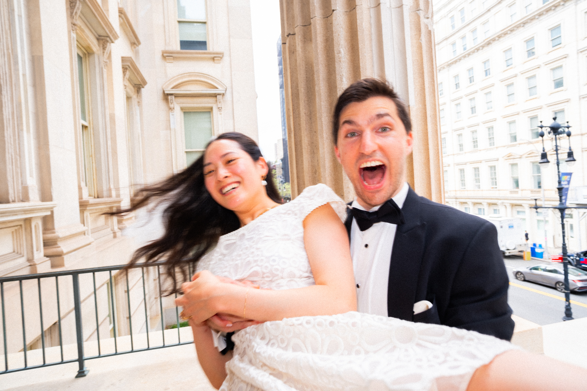
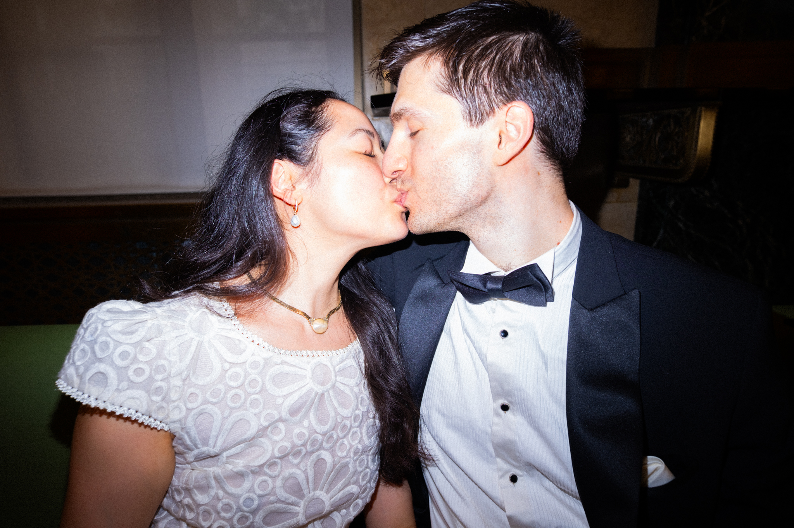
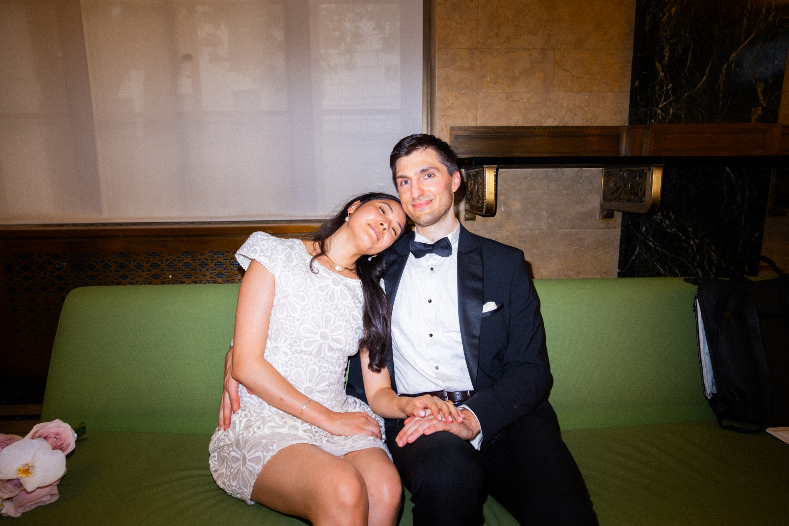
MOTION ARCHIVE / SOUND OFF, PULSE ON
The flash
keeps moving.
Three different cuts. Three different rooms. No repeated frames.
NO VELVET ROPE REQUIRED.
Beautiful
Disorder
THE PHOTOGRAPHER / 01
Justin von Braun,
NYC photographer.
I’m Justin von Braun, the photographer behind The Bald Dude Co. I photograph fashion, events, portraits, courthouse weddings, and commercial work, plus short-form motion when the project calls for it.
I work with people and brands who want strong images without being over-directed. I’ll help you feel comfortable, find the light, and stay ready for the moments that happen on their own.
That’s the goal: photographs that feel honest, look good, and still feel like you.
PHOTOGRAPHY SERVICES IN NEW YORK CITY
Hire me for
BOOKINGS / COLLABORATIONS / BEAUTIFUL TROUBLE
Get in frontof my camera.
Your story is already happening.
Let’s photograph it well.
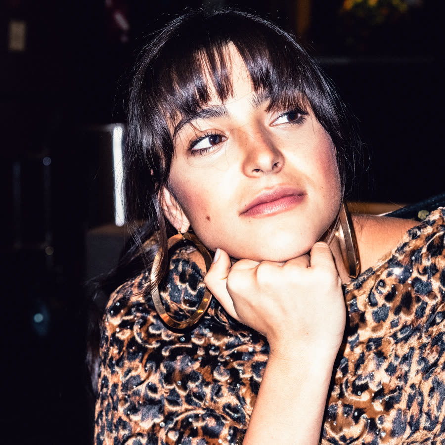
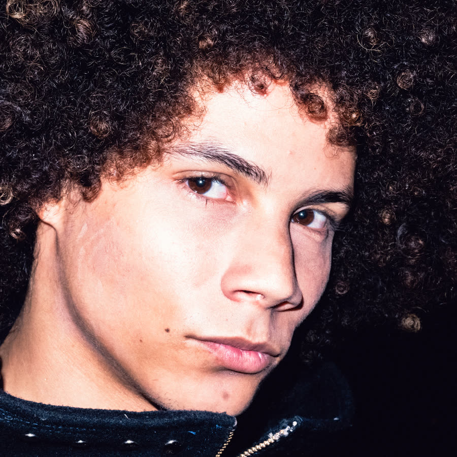
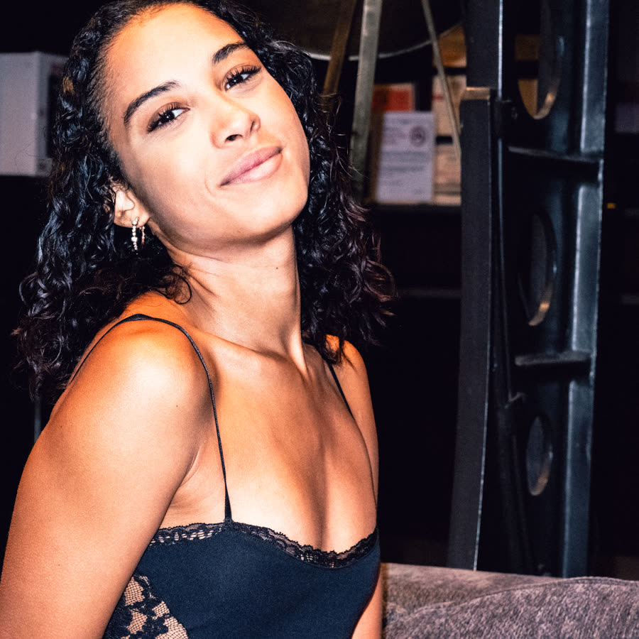
MAIN ROTATION / CURATED BY THE BALD DUDE
IN THE CAVERN
START A PROJECT